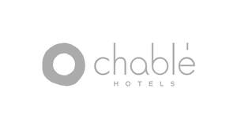

Trade Mark Journal No.2025/029 18 July 2025
UK00004224923 26 June 2025 (35,43)

- Class 35
- Hotel and resort management services; hotel and resort franchising services; business advisory and consultancy services relating to hotel and resort management, operations, and franchising; business management of hotels and resorts; hotel, resort, and real estate marketing services; organisation and management of customer loyalty and incentive programs; promotional services in the nature of customer loyalty and incentive programs; Business management of health spas; business assistance relating to health spa franchising; sales management services in relation to real estate connected with residential condominiums; advertising or promotional services in connection with the sale or leasing of residential condominiums.
- Class 43
- Hotel, resort, lodging, and temporary accommodation services; hotel, resort, lodging, and temporary accommodation information services; hotel, resort, lodging, and temporary accommodation reservation services; private residence and private social club services, namely, catering, restaurant and bar services, serving of food and beverages, child care services, bookings for restaurants and meals, banquet and social function facilities for special occasions; restaurant, bar, cocktail lounge, café, coffee shop, and snack bar services; catering services for the provision of food and drink; restaurant reservation services; provision of conference, meeting, event, convention, and exhibition facilities; rental of chairs, tables, table linen and glassware.
Chable Brand, S.A.P.I. de C.V.
Representative: Bristows LLP